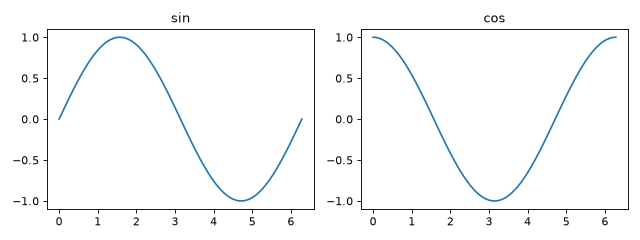
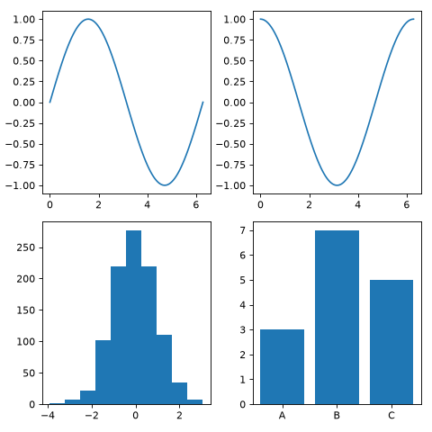

複数グラフの配置
plt.subplots(nrows, ncols) に行数・列数を指定すると、複数の Axes をグリッド状に並べた Figure を作成できます。
import matplotlib.pyplot as plt
import numpy as np
from matplotlib.figure import Figure
x: np.ndarray = np.linspace(0, 2 * np.pi, 100)
fig: Figure
axes: np.ndarray
fig, axes = plt.subplots(nrows=1, ncols=2, figsize=(8, 3))
axes[0].plot(x, np.sin(x))
axes[0].set_title("sin")
axes[1].plot(x, np.cos(x))
axes[1].set_title("cos")
fig.tight_layout()



nrows と ncols を両方 1 より大きくした場合、axes は 2 次元配列になるため、axes[0, 0] のように行・列を指定してアクセスします。
import matplotlib.pyplot as plt
import numpy as np
from matplotlib.figure import Figure
x: np.ndarray = np.linspace(0, 2 * np.pi, 100)
rng: np.random.Generator = np.random.default_rng(seed=0)
data: np.ndarray = rng.normal(size=1000)
categories: list[str] = ["A", "B", "C"]
values: list[int] = [3, 7, 5]
fig: Figure
axes: np.ndarray
fig, axes = plt.subplots(nrows=2, ncols=2, figsize=(6, 6))
axes[0, 0].plot(x, np.sin(x))
axes[0, 1].plot(x, np.cos(x))
axes[1, 0].hist(data)
axes[1, 1].bar(categories, values)
fig.tight_layout()



fig.tight_layout() を呼び出すと、グラフ同士の余白が自動調整され、ラベルやタイトルが重なりにくくなります。